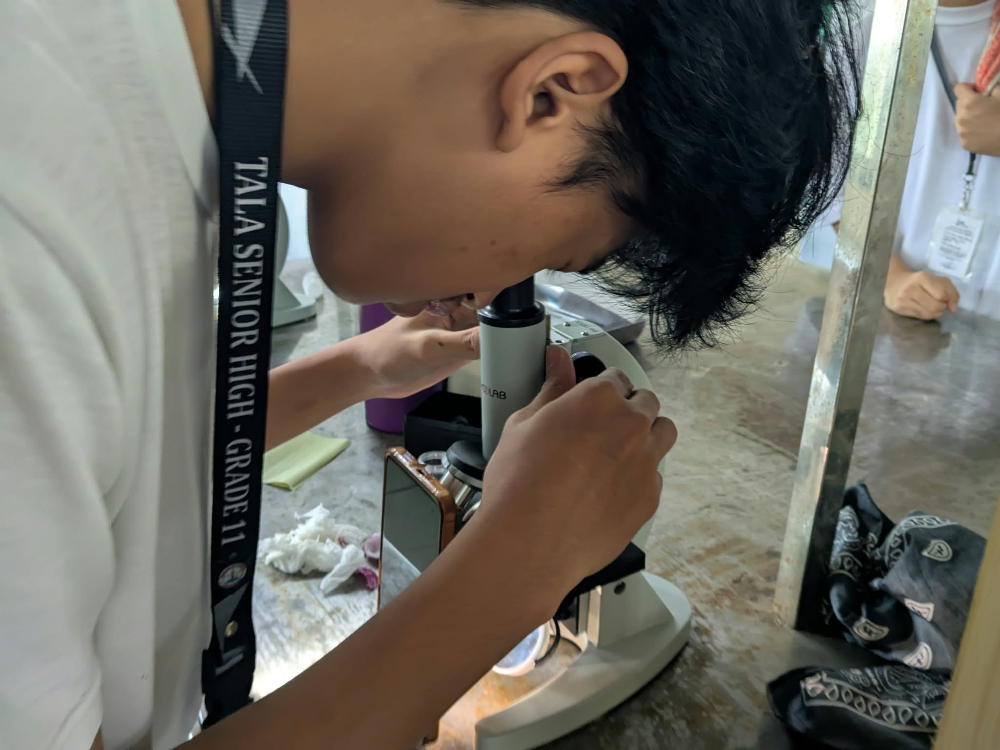
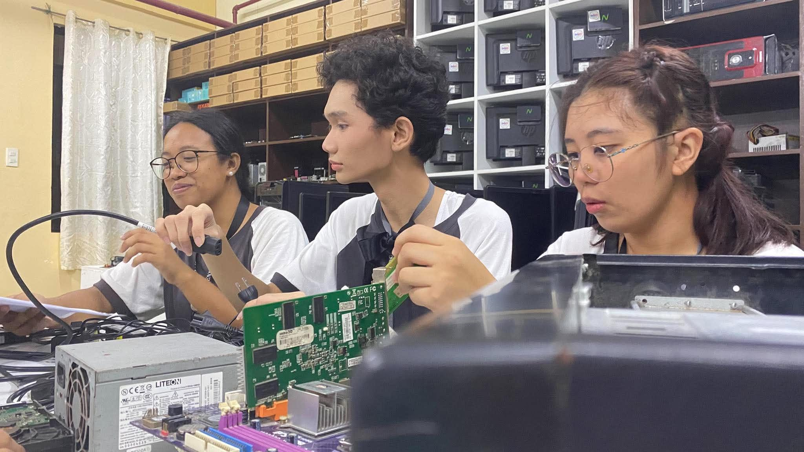
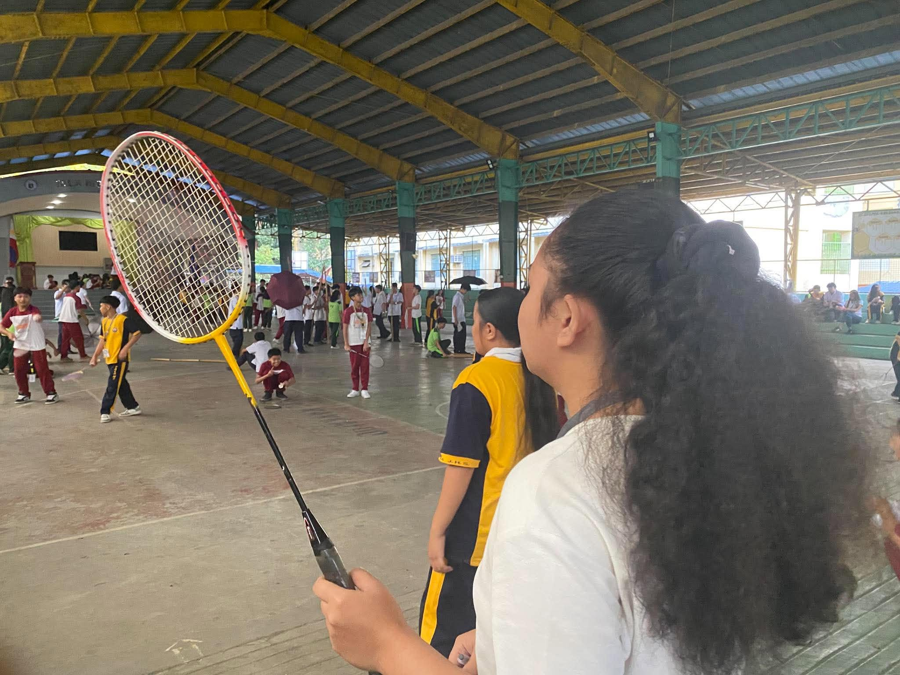
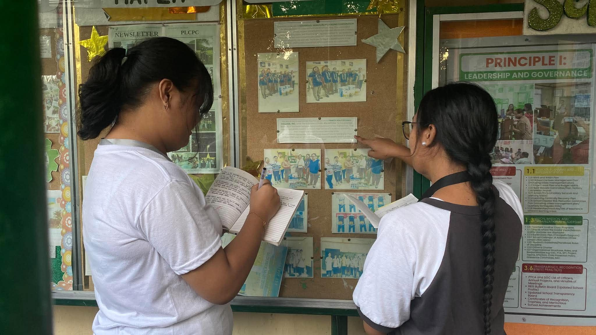
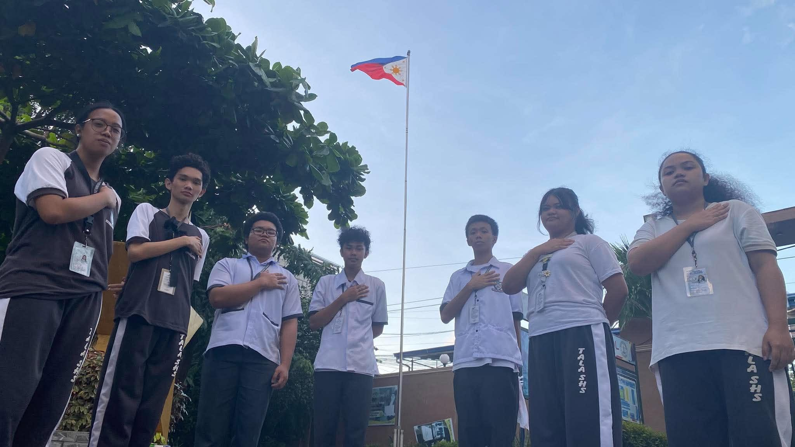

NEW SCIENCE LABORATORY OPENS BRINGING STUDENTS WITH DISCOVERIES

Students and teachers of Visionary School are looking forward to a new era of learning as the school officially announces the opening of its newly constructed Science Laboratory Facility on November 10, 2026.
The new facility was established to provide students with a better environment for conducting scientific experiments, exploring discoveries, and developing their knowledge in science. It is equipped with modern laboratory materials, microscopes, test tubes, glassware, safety equipment, and other essential tools needed for various scientific activities.
According to the school principal, the construction of the laboratory is part of Visionary School's continuous effort to improve the quality of education and provide students with more opportunities for hands-on learning.
NEW COMPUTER LABORATORY OPENS FOR STUDENTS TO USE!

The Visionary Academy proudly announces the opening of its newly upgraded Computer Laboratory, providing students with modern equipment and improved facilities for digital learning.
The upgraded laboratory features new desktop computers, faster internet connectivity, updated software, and a more comfortable learning environment. These improvements aim to help students develop essential computer skills, explore programming, conduct research, and strengthen their technological knowledge.
The school administration hopes that this new facility will encourage students to become more creative, productive, and confident in using modern technology.
Dear Visionaries who have a passion for badminton!!!

Whether beginners or experienced players, are encouraged to join and showcase their skills. The school is looking for dedicated, disciplined, and hardworking individuals who are willing to learn, improve, and represent the institution in upcoming inter-school competitions. Don't miss out on our tryouts this November 20-21, 2026 at the School Gymnasium. Don't miss out on this golden opportunity to show and develop your athletic passion and become part of the school's growing badminton team!
Your talent deserves a court! Take your shot and join the team!
THE POWER OF STUDENTS VOICE: Every Voice Matters, Every Opinion Counts!

The Journalism Club of the Visionary Academy proudly introduces its new Opinion Corner, a platform where students can freely express their thoughts, share perspectives, and discuss relevant issues within the school community.
Through this initiative, students are encouraged to write about topics that matter to them, including education, technology, environmental awareness, student life, and social responsibility.
The project aims to develop students' confidence, communication, and critical-thinking skills while promoting respectful discussions and responsible expression of opinions.
The club believes that every student has a story and knowledge worth sharing and an opinion worth hearing. By giving learners an opportunity to speak up, the school hopes to create a community where ideas are valued and different perspectives are respected.
RESPECT FOR OUR FLAG! HONORING OUR NATION!

As Filipino students and citizens, respecting our national flag is one way of showing our love, pride, and patriotism for our country. The Philippine flag represents our freedom, unity, courage, and the sacrifices of our national heroes.
We are reminded to show proper respect whenever the flag is raised or lowered, stand properly during the national anthem, and avoid using the flag in disrespectful ways. Respecting our flag is not just about following rules; it is about valuing our history, honoring our identity, and appreciating the freedom we enjoy today.
"Respect our flag, honor our heroes, and take pride in being Filipino!"
No news found.

_imgupscaler.ai_Sharpener_2K.jpg)